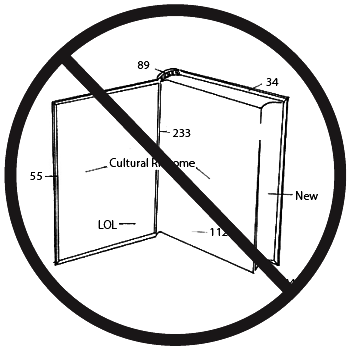
The Obsolete Book in a Post-Obsolete World, as Represented by a Post-Obsolete Book About Dance.
(An Archival Rhizome Ecology in Ten Parts, and A Reflection on the Obsolescence of Obsolescence, Documented on the Cloud, and Open-Sourced as a Defense Against Post-Post-Obsolescence).
The Book is Obsolete.
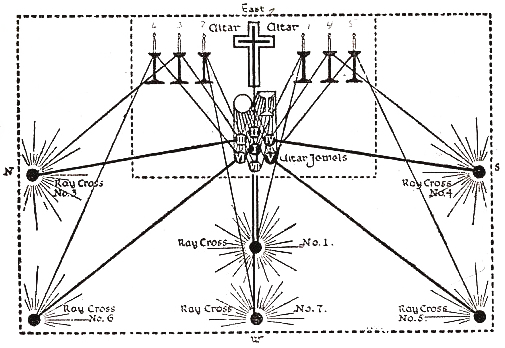
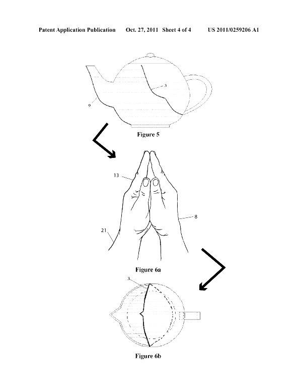
The Book as Word.
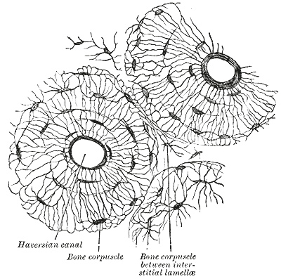
The Word as Definition.
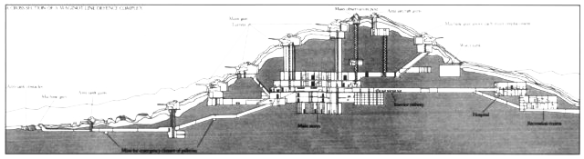
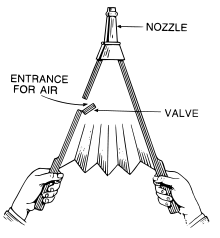
Definition as Meaning.
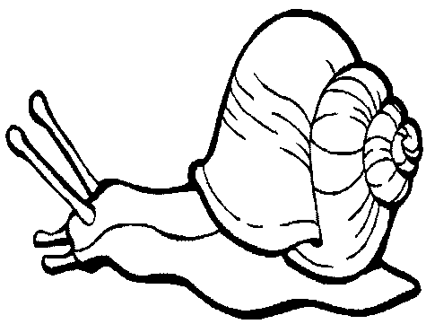
Meaning as Pen.
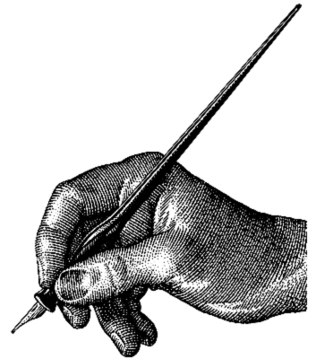
The Pen is Obsolete.
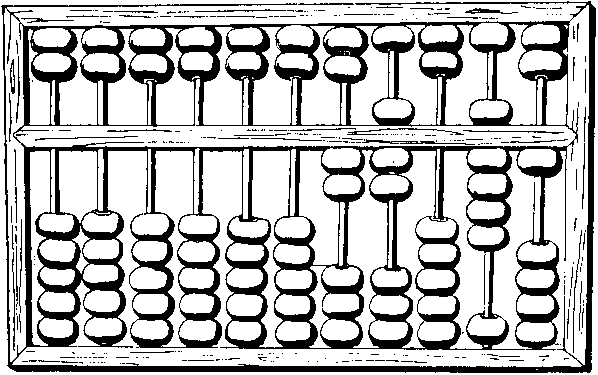
This is a Side Note (sorry (sorrysorry) sorry).
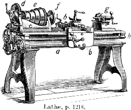
The Pen as Computer as Tablet as Cloud as Architecture.
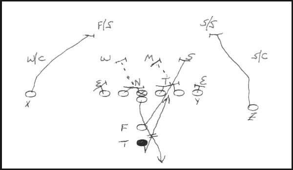
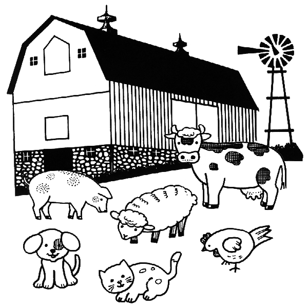
Architecture as Obsolete Book.
A Ritual Dance in Memory of the Architectural Post-Book.
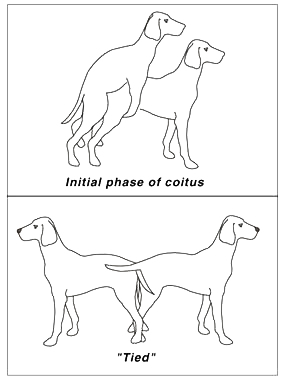